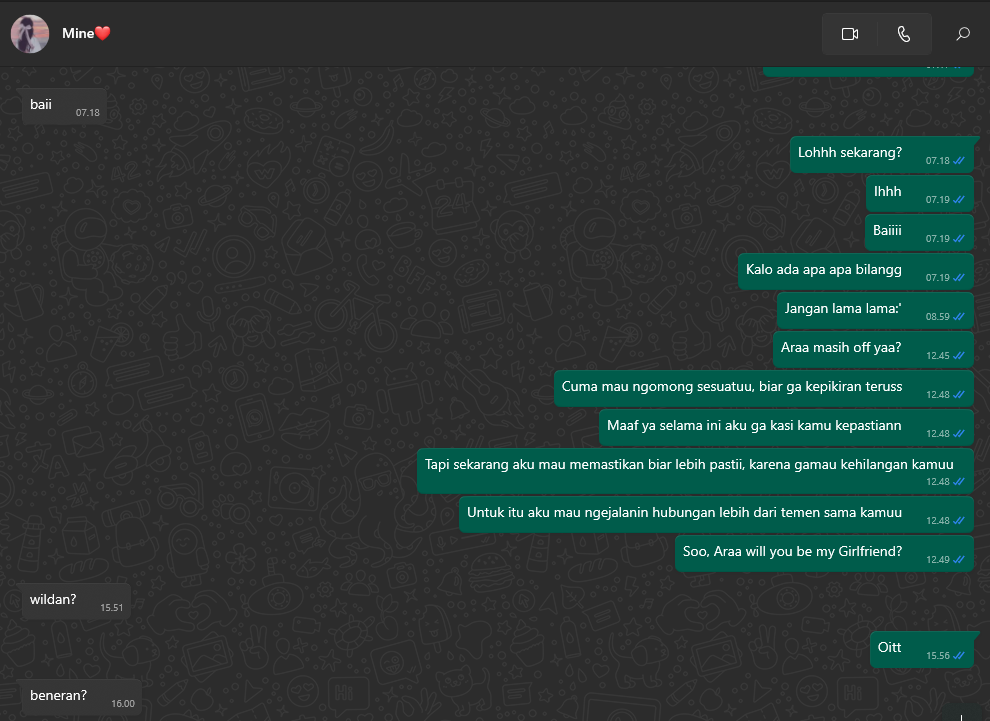

Kalau dipikir lucu juga yaa awal kita ketemu wkwkw, ketemu lewat bot Anonymous di Telegram, kita saling sapa, ngobrol, ehh galama kemudian kamu ketiduran wkwk, emang sih dulu kamu hobi banget ketiduran, kebangun lagi tengah malem wkwk
yang awalnya kita ngobrolin tentang perkuliahan, sampai kita ngobrol tentang kehidupan sehari-hari, yang awalnya cuma ngobrol di bot anon, lanjut tele, ehh sampai WA
Waktu di wa kita ngobrol banyak tentang semuanya, pada saat itu juga aku mulai tertarik sama kamu nyariin kamu setiap hari, merhatiin kamu, gatau kenapa nyaman aja pas ada bareng kamu, nyaman banget. Sampai dimana aku mulai takut kehilangan kamu dihidup aku dan memberanikan diri menyatakan rasa aku ke kamu, kamu tau ngga, itu aku mencet kirimnya hampir sejam lebih, kirim ngga yaa, dan akhirnya aku kirim dengan keadaan panas dingin wkwk
Gaberasa ya waktu begitu cepat berlalu, dan aku beruntung banget masih sama kamu terus, malah kamu sekarang jadi orang paling spesial di hidup aku, ngga nyangka banget yaa wkwk, dan aku orang paling bersyukur di dunia karena bisa ditemenin wanita terhebat yang mau menemani aku berproses dan nerima aku apa adanya
Semoga kita bisa selalu bersama terus yaa sayangg, maaf kalau aku masih banyak kurangnya, ajarin aku gimana caranya menjadi orang yang kamu mau selama ini, aku bakal terima semua yang kamu saranin, karena tujuan aku hadir di dunia kamu adalah membahagiakan kamu. kamu tidak perlu mikir kamu tuh kurang, kamu tuh udah lebih dari cukup buat aku, kamu semestanya aku. Kita kejar wistlist kita semua yaa sayangg, kalau ada masalah kita keluar dari masalahnya, bukan hubungannya. semoga tujuan kita kelak tercapai yaa sayangg